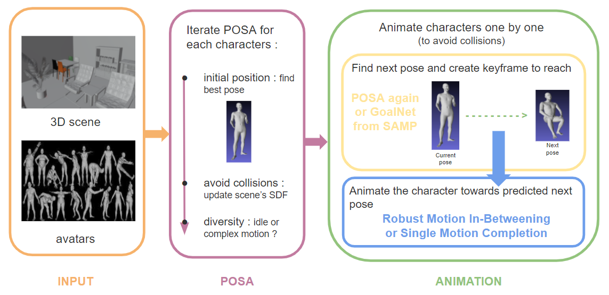

INTRODUCTION
Detailed animations of human avatars must be included into the VR system to study the impact of the design on the people
lifestyle. We will develop a new AI-based approach for animated 3D human avatar generation in a given 3D scene. To learn
how to animate and consistently deform the human body and clothes we must first build a new 4D (3D+time) human body and
cloth database.
With our 4D human dataset we will design a network to generate realistic animation of humans wearing loose clothes. This
will allow us to populate scenes with diverse human avatars performing daily activities.
RELATED WORK
PLACING CHARACTERS IN A SCENE
The first thing we need for our project is to find our characters an appropriate placement in the scene. We decided on using POSA
(Populataing 3D Scenes by Learning Human-Scene Interaction). POSA is based on semantics and SDFs (Signed Distance Function) to represent the scenes and uses the SMPL-X body model for the avatars.
With a generator trained using a cVAE (conditionnal Variational Auto Encoder) POSA predicts the best affordances for a character's body in a certain position.
It basically provides a map of the body with likely contacts.
However, the issue we will be faced with is that POSA requires some files describing the scene's SDF and semantics. This means we can't directly give POSA our custom scenes in OBJ format. We will need to compute the additionnal information POSA requires to work.
MOTION INTERPOLATION
A second important field we explored is Motion Interpolation.
There were two particular papers we took a deep interest in :
Both models complete motion between given past frames and a yet to come target keyframe. They are also able to create whole cycles of motion. For example, if the past and target keyframes are part of a walking cycle, the models are able to generate multiple steps to reach the next target, no matter the distance between the two keyframes. However, these models do not handle interactions with a scene. The second problem for us is that the code available for either of these model.
CHARACTER INTERACTION WITH A SCENE
Last field we took interest in is HSI (Human-Scene Interaction). The paper that caught our interest is SAMP
(Stochastic Scene-Aware Motion Completion). This project regroups the handling for HSI and Motion Completion. Given an initial pose and scene configuration,
SAMP will find a good goal target position and then compute the motion to reach it while following the best path to avoid the scene's obstacles.
OUR APPROCH AND PIPELINE
To achieve our goal, we decided to combine both POSA and SAMP technologie. We initially wanted to add Robust Motion In-Betweening to the equation. However, their code is not available.
The first step in our process is to apply POSA on a folder of posed characters for a new custom scene.
The difficulty here is to make our scene usable by POSA. As stated before, we shall then need files describing the SDF and the semantics of said scene.
To obtain those informations, we created an algorithm capable of such a task and we tested it's reliablility with a Marching Cubes algorithm.
Our algorithm works with tetrahedralized meshes and we used python's PyMesh library to obtain such a mesh.
We then make tests to see if the points in our environment are inside a tetrahedra our not.
We tested this approch and it successfully works : we obtain the scene back after applying Marching Cubes and most importantly, POSA is able to interpret our results and to succesfully place characters in our custom scene.
VIRTUAL REALITY APPLICATION FOR ARCHITECTS
WORK IN PROGRESS ...
TUTORIAL : HOW CAN YOU USE OUR APP
WORK IN PROGRESS ...